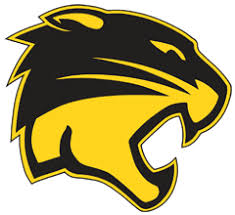

About Us
Last season, the Wildcats had a good season finishing off with a record 15-14. Having played some of the top teams in the area and Florida, the cats put up a good fight in every game. The team was lead by a strong pitching staff one of the best pitching duos in the league. In games where Spencer Atkins started on the bump and Andrew Crooks relieved, the Wildcats were 6-0. The Wildcats finished toward the bottom of the league but their post-season run it what stood out. Being an 9 seed in their part of the bracket, they knocked off the 8 seed Whitmer Panthers, then beating the defending district champions, the Saint John's Titans. The Titans were the two seed in the bracket. The Wildcats then lost in a 2-0 game against the Anthony Wayne Generals.
